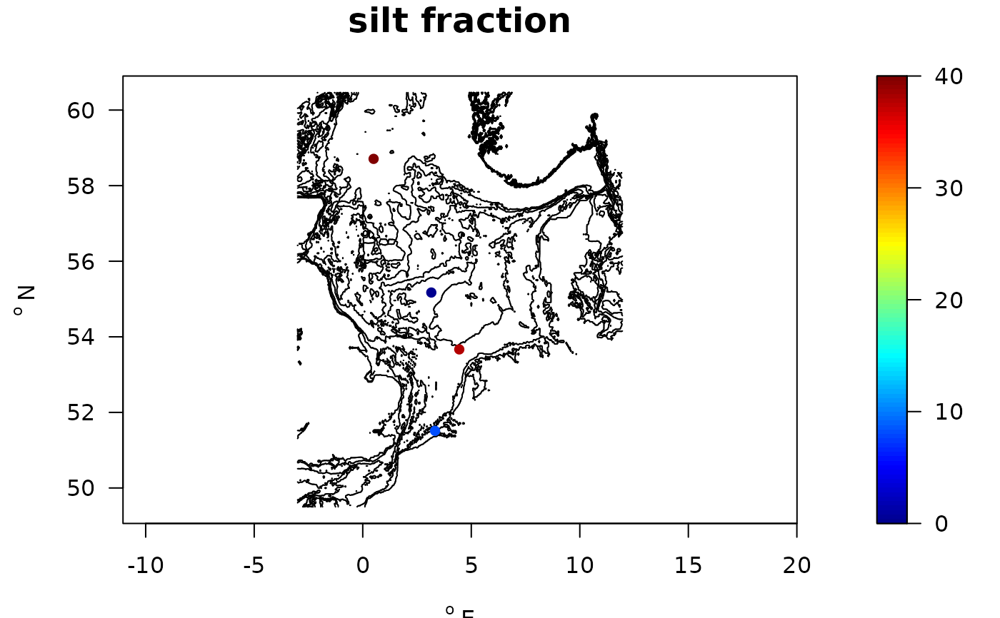
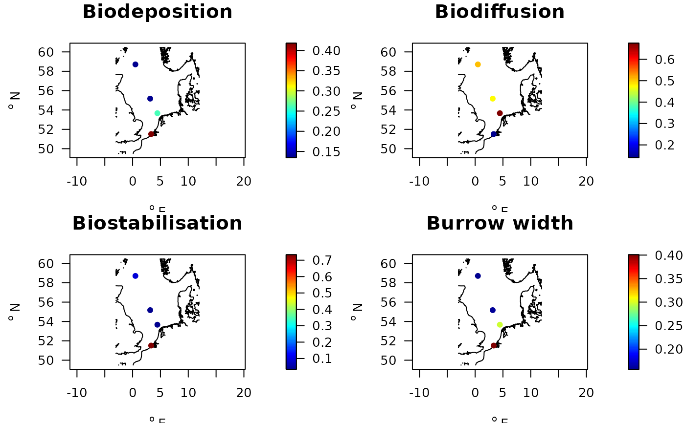
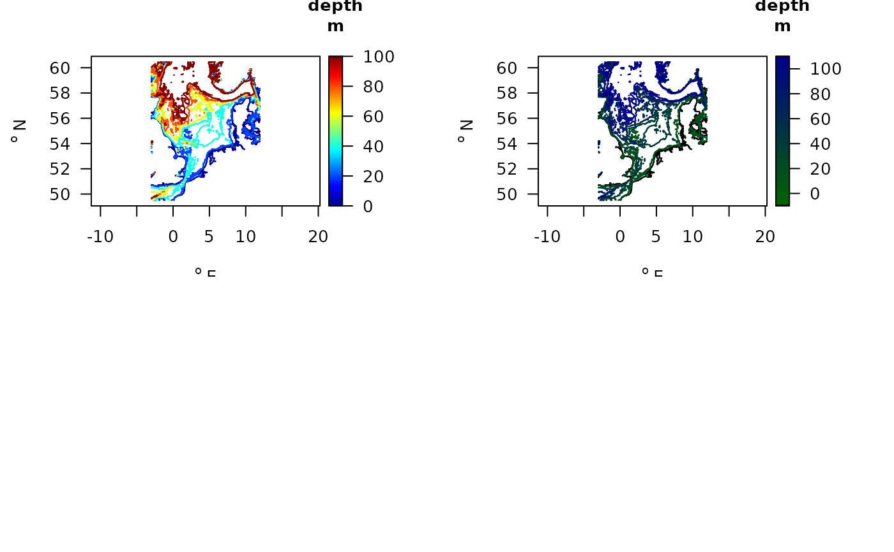

BFIATdata.RdNIOZdata provides macrofauna data at 4 sites for running the BFIAT model tools.
**NIOZdata** is a list with 5 tables .
density a data.frame with the station names, taxon, density, biomass (wet weight) and sampling date.
stations a data.frame with the station names, x and y positions, depth and the number of samples on which the data were based.
taxonomy a data.frame with column names taxon, genus, family, order, class, phylum and AphiaID.
fishing a data.frame with the species traits necessary for estimating the fishing parameters; columns are taxon, 0, 0-5, 5-15, 15-30, >30, Age.at.maturity, r.
contours a list with the x, y, z values of the contours (for use with map_key or map_legend).
abiotics a data.frame with abiotic conditions (depth, D50, silt percentage).
sar a data.frame with fishing intensities for the stations, per metier and per year; columns are station, sandy, gear, year, sar, gpd, where metier is: TBB, OT: beam, otter trawl; DRB: dredge, SN: seine.
Dataset from the Vlakte van de Raan:
J. Tiano, J. Depestele, G. Van Hoey, J. Fernandes, P. van Rijswijk, and K. Soetaert, 2022. Trawling effects on biogeochemical processes are mediated by fauna in high energy biogenic reef-inhabited coastal sediments. Biogeosciences, 19, 2583-2598, 2022
Dataset from the Frisian Front:
Tiano, J. C., R. Witbaard, M.J.N. Bergman, P. van Rijswijk, A. Tramper, D. van Oevelen, K. Soetaert, 2019. Acute impacts of bottom trawl gears on benthic metabolism and nutrient cycling. ICES journal of Marine Science, fsz060, https://doi.org/10.1093/icesjms/fsz060.
Tiano, J., van der Reijden, K, O'Flynn, S, Beauchard, O, van der Ree, S, van der Wees, J, Ysebaert, T, Soetaert, K., 2020. Experimental assessment of bottom trawling finds significant effects on epifauna and juvenile infauna. Marine Environmental Research, 159, 11 p., 104964. https://doi.org/10.1016/j.marenvres.2020.104964
Dataset from the Dogger Bank and Fladen Ground:
Emil De Borger, Ulrike Braeckman, Karline Soetaert, 2021. Rapid organic matter cycling in North Sea sediments. Continental shelf research, vol. 214, 2021, doi:10.1016/j.csr.2020.104327.
Traits_nioz for trait data from package Btrait.
MWTL for density data from package Btrait.
Data from four North Sea stations was used in NIOZdata.
Vlakte_van_de_Raan The sandy, high metabolism site uses averaged data from 59 boxcores from the Vlakte van de Raan (Tiano et al., 2022). Faunal samples for this site were processed at the Flanders Research Institute for Agriculture, Fisheries and Food (NIOZ).
FrieseFront The high metabolism, muddy site, uses information from 25 boxcore samples in the Frisian Front (Tiano et al., 2019, 2020) with faunal samples processed at the Netherlands Institute for Sea Research (NIOZ) and Fugro.
DoggerbankData for the low metabolism sandy site were collected from three boxcore samples from the Dogger Bank (De Borger et al., 2021) and were processed at the NIOZ.
FladenGround Data for the low metablism muddy sites were collected from three boxcore samples from the Fladen Grounds (De Borger et al., 2021) and were processed at the NIOZ.
##-----------------------------------------------------
## Show contents of the NIOZ data sets
##-----------------------------------------------------
metadata(NIOZdata$density)
#> name description units
#> 1 station station name
#> 2 date sampling date, a string
#> 3 taxon taxon name, checked by worms, and adjusted
#> 4 density species total density individuals/m2
#> 5 biomass_ww species total wet weight gAFDW/m2
head(NIOZdata$density)
#> station taxon density biomass_ww date
#> 1 FladenGround Ampelisca gibba 4.866667 8.066667e-03 2017-2019
#> 2 FladenGround Amphictene auricoma 4.866667 1.375000e-01 2017-2019
#> 3 FladenGround Amphipholis squamata 9.700000 2.366667e-03 2017-2019
#> 4 FladenGround Amphiura chiajei 33.966667 1.835667e+00 2017-2019
#> 5 FladenGround Arctica islandica 9.733333 2.957744e+02 2017-2019
#> 6 FladenGround Argissa hamatipes 4.866667 1.933333e-03 2017-2019
metadata(NIOZdata$fishing)
#> name description
#> 1 0 proportion living ON sediment
#> 2 0-5 proportion living in upper 5 cm of the sediment, [0,1]
#> 3 5-15 proportion living in 5-15cm depth slice
#> 4 15-30 proportion living in 15-30cm depth slice
#> 5 >30 proportion living in >30cm depth slice
#> 6 Age.at.maturity age at maturity
#> 7 r rate of increase, estimated as 5.31*0.788/Age.at.maturity
#> units
#> 1 -
#> 2 -
#> 3 -
#> 4 -
#> 5 -
#> 6 years
#> 7 /year
head(NIOZdata$fishing)
#> taxon 0 0-5 5-15 15-30 >30 Age.at.maturity r
#> 1 Abludomelita obtusata 0.50 0.5000 0.0000 0 0 0.5 8.330328
#> 2 Abra 0.00 0.7500 0.2500 0 0 0.5 8.330328
#> 3 Abra alba 0.00 0.5000 0.5000 0 0 0.5 8.330328
#> 4 Abra nitida 0.00 1.0000 0.0000 0 0 0.5 8.330328
#> 5 Abyssoninoe hibernica 0.25 0.1875 0.5625 0 0 3.5 1.190047
#> 6 Acrocnida brachiata 0.00 0.0000 1.0000 0 0 4.0 1.041291
metadata(NIOZdata$sar)
#> name description units
#> 1 sandy sandy sediment (based on Md grainsize) or not -
#> 2 year year of the fishing -
#> 3 gear metier; TBB, OT: beam, otter trawl; DRB: dredge, SN: seine -
#> 4 sar annual swept area ratios for the surface (0-2cm) /yr
#> 5 gpd estimated gear penetration depths cm
NIOZdata$sar
#> station sandy gear year sar gpd
#> 1 Doggerbank TRUE OT 2009 0.486488173 1.1
#> 2 Doggerbank TRUE SN 2009 0.547372942 1.1
#> 3 Doggerbank TRUE TBB 2009 0.240543916 1.9
#> 4 FrieseFront TRUE OT 2009 0.187068891 1.1
#> 5 FrieseFront TRUE SN 2009 0.001840929 1.1
#> 6 FrieseFront TRUE TBB 2009 0.888341978 1.9
#> 7 Vlakte_van_de_Raan TRUE OT 2009 1.474256306 1.1
#> 8 Vlakte_van_de_Raan TRUE TBB 2009 3.690922725 1.9
#> 9 Doggerbank TRUE OT 2010 0.434391462 1.1
#> 10 Doggerbank TRUE SN 2010 0.995565492 1.1
#> 11 Doggerbank TRUE TBB 2010 0.436246909 1.9
#> 12 FrieseFront TRUE OT 2010 0.031755774 1.1
#> 13 FrieseFront TRUE TBB 2010 1.364653823 1.9
#> 14 Vlakte_van_de_Raan TRUE OT 2010 1.797672553 1.1
#> 15 Vlakte_van_de_Raan TRUE TBB 2010 4.712480210 1.9
#> 16 Doggerbank TRUE OT 2011 0.818700043 1.1
#> 17 Doggerbank TRUE SN 2011 0.140292008 1.1
#> 18 Doggerbank TRUE TBB 2011 0.063568572 1.9
#> 19 FrieseFront TRUE OT 2011 0.042217804 1.1
#> 20 FrieseFront TRUE SN 2011 0.001584465 1.1
#> 21 FrieseFront TRUE TBB 2011 0.185835365 1.9
#> 22 Vlakte_van_de_Raan TRUE OT 2011 0.717074950 1.1
#> 23 Vlakte_van_de_Raan TRUE TBB 2011 3.431231733 1.9
#> 24 Doggerbank TRUE OT 2012 0.526947324 1.1
#> 25 Doggerbank TRUE SN 2012 0.474284890 1.1
#> 26 Doggerbank TRUE TBB 2012 0.503431328 1.9
#> 27 FrieseFront TRUE OT 2012 0.037232896 1.1
#> 28 FrieseFront TRUE TBB 2012 1.609863914 1.9
#> 29 Vlakte_van_de_Raan TRUE OT 2012 1.247629667 1.1
#> 30 Vlakte_van_de_Raan TRUE TBB 2012 5.894754041 1.9
#> 31 Doggerbank TRUE OT 2013 0.257876886 1.1
#> 32 Doggerbank TRUE SN 2013 0.562245241 1.1
#> 33 Doggerbank TRUE TBB 2013 0.670200749 1.9
#> 34 FrieseFront TRUE OT 2013 0.503014834 1.1
#> 35 FrieseFront TRUE SN 2013 0.009670976 1.1
#> 36 FrieseFront TRUE TBB 2013 1.024208144 1.9
#> 37 Vlakte_van_de_Raan TRUE OT 2013 0.719956749 1.1
#> 38 Vlakte_van_de_Raan TRUE TBB 2013 5.718325789 1.9
#> 39 Doggerbank TRUE OT 2014 1.685672337 1.1
#> 40 Doggerbank TRUE SN 2014 1.217272418 1.1
#> 41 Doggerbank TRUE TBB 2014 0.467368300 1.9
#> 42 FrieseFront TRUE OT 2014 0.467224344 1.1
#> 43 FrieseFront TRUE SN 2014 0.003162743 1.1
#> 44 FrieseFront TRUE TBB 2014 0.581182560 1.9
#> 45 Vlakte_van_de_Raan TRUE OT 2014 0.293471556 1.1
#> 46 Vlakte_van_de_Raan TRUE TBB 2014 4.723476517 1.9
#> 47 Doggerbank TRUE OT 2015 0.624384332 1.1
#> 48 Doggerbank TRUE SN 2015 0.912954313 1.1
#> 49 Doggerbank TRUE TBB 2015 1.039779153 1.9
#> 50 FrieseFront TRUE OT 2015 0.289381537 1.1
#> 51 FrieseFront TRUE TBB 2015 0.280611822 1.9
#> 52 Vlakte_van_de_Raan TRUE OT 2015 0.577732637 1.1
#> 53 Vlakte_van_de_Raan TRUE TBB 2015 5.662960904 1.9
#> 54 Doggerbank TRUE OT 2016 0.514820697 1.1
#> 55 Doggerbank TRUE SN 2016 0.064396165 1.1
#> 56 Doggerbank TRUE TBB 2016 0.480204930 1.9
#> 57 FrieseFront TRUE OT 2016 0.222905548 1.1
#> 58 FrieseFront TRUE TBB 2016 0.341281431 1.9
#> 59 Vlakte_van_de_Raan TRUE OT 2016 0.556322542 1.1
#> 60 Vlakte_van_de_Raan TRUE TBB 2016 8.777992048 1.9
#> 61 Doggerbank TRUE OT 2017 0.388396311 1.1
#> 62 Doggerbank TRUE SN 2017 0.130649499 1.1
#> 63 Doggerbank TRUE TBB 2017 0.172858813 1.9
#> 64 FrieseFront TRUE OT 2017 0.028675558 1.1
#> 65 FrieseFront TRUE SN 2017 0.080483066 1.1
#> 66 FrieseFront TRUE TBB 2017 0.072245080 1.9
#> 67 Vlakte_van_de_Raan TRUE OT 2017 0.097936917 1.1
#> 68 Vlakte_van_de_Raan TRUE TBB 2017 6.855648326 1.9
#> 69 Doggerbank TRUE OT 2018 0.875692993 1.1
#> 70 Doggerbank TRUE SN 2018 0.016549367 1.1
#> 71 Doggerbank TRUE TBB 2018 0.080756233 1.9
#> 72 FrieseFront TRUE OT 2018 0.060393842 1.1
#> 73 FrieseFront TRUE SN 2018 0.350010585 1.1
#> 74 FrieseFront TRUE TBB 2018 0.318602811 1.9
#> 75 Vlakte_van_de_Raan TRUE OT 2018 0.003069557 1.1
#> 76 Vlakte_van_de_Raan TRUE TBB 2018 4.918896515 1.9
#> 77 Doggerbank TRUE OT 2019 1.492480999 1.1
#> 78 Doggerbank TRUE SN 2019 0.078015624 1.1
#> 79 Doggerbank TRUE TBB 2019 0.026856502 1.9
#> 80 FrieseFront TRUE OT 2019 0.055471966 1.1
#> 81 FrieseFront TRUE SN 2019 0.077461767 1.1
#> 82 FrieseFront TRUE TBB 2019 0.128991817 1.9
#> 83 Vlakte_van_de_Raan TRUE OT 2019 0.019741463 1.1
#> 84 Vlakte_van_de_Raan TRUE TBB 2019 6.654184542 1.9
#> 85 Doggerbank TRUE OT 2020 0.350662800 1.1
#> 86 Doggerbank TRUE SN 2020 0.027000360 1.1
#> 87 Doggerbank TRUE TBB 2020 0.075288460 1.9
#> 88 FrieseFront TRUE OT 2020 0.206650225 1.1
#> 89 FrieseFront TRUE SN 2020 0.011735778 1.1
#> 90 FrieseFront TRUE TBB 2020 0.227015173 1.9
#> 91 Vlakte_van_de_Raan TRUE TBB 2020 6.975363901 1.9
##-----------------------------------------------------
## SPECIES data
##-----------------------------------------------------
head(NIOZdata$density)
#> station taxon density biomass_ww date
#> 1 FladenGround Ampelisca gibba 4.866667 8.066667e-03 2017-2019
#> 2 FladenGround Amphictene auricoma 4.866667 1.375000e-01 2017-2019
#> 3 FladenGround Amphipholis squamata 9.700000 2.366667e-03 2017-2019
#> 4 FladenGround Amphiura chiajei 33.966667 1.835667e+00 2017-2019
#> 5 FladenGround Arctica islandica 9.733333 2.957744e+02 2017-2019
#> 6 FladenGround Argissa hamatipes 4.866667 1.933333e-03 2017-2019
# create summaries
SUMM <- with(NIOZdata$density,
get_summary(descriptor = station,
taxon = taxon,
value = density))
SUMM$density # The number of species per station
#> descriptor value
#> 1 Doggerbank 1519.200
#> 2 FladenGround 1169.767
#> 3 FrieseFront 1322.425
#> 4 Vlakte_van_de_Raan 20597.541
SUMM$taxa # number of taxa
#> descriptor taxon
#> 1 Doggerbank 61
#> 2 FladenGround 51
#> 3 FrieseFront 57
#> 4 Vlakte_van_de_Raan 81
# The number of times a species has been found
Nocc <- tapply(X = NIOZdata$density$station,
INDEX = NIOZdata$density$taxon,
FUN = length)
# most often encountered taxa
N_occ <- SUMM$occurrence
tail(N_occ[order(N_occ[,2]), ])
#> taxon occurrence
#> 65 Glycera 3
#> 82 Kurtiella bidentata 3
#> 136 Ophiuroidea 3
#> 181 Spiophanes bombyx 3
#> 186 Sthenelais limicola 3
#> 189 Tellimya ferruginosa 4
##-----------------------------------------------------
## ABIOTICS data
##-----------------------------------------------------
summary(NIOZdata$abiotics)
#> station depth D50 silt
#> Length:4 Min. : 10.00 Min. : 57.00 Min. : 0.000
#> Class :character 1st Qu.: 22.00 1st Qu.: 78.75 1st Qu.: 6.225
#> Mode :character Median : 30.00 Median :148.00 Median :23.150
#> Mean : 51.25 Mean :142.50 Mean :21.575
#> 3rd Qu.: 59.25 3rd Qu.:211.75 3rd Qu.:38.500
#> Max. :135.00 Max. :217.00 Max. :40.000
#> sar subsar gpd
#> Min. :1.239 Min. :0.3788 Min. :1.550
#> 1st Qu.:1.744 1st Qu.:0.4845 1st Qu.:1.670
#> Median :2.545 Median :0.6841 Median :1.941
#> Mean :3.159 Mean :1.2416 Mean :1.970
#> 3rd Qu.:3.961 3rd Qu.:1.4413 3rd Qu.:2.241
#> Max. :6.308 Max. :3.2193 Max. :2.449
NIOZabiot <- merge(NIOZdata$stations, NIOZdata$abiotics,
by = "station")
with(NIOZabiot,
map_key(x, y, colvar = silt,
contours = NIOZdata$contours, draw.levels = TRUE,
main = "silt fraction",
pch = 16))

# show the different abiotic data sets
metadata(NIOZdata$abiotics)
#> name description units
#> 1 depth water depth m
#> 2 D50 Median grain size micrometer
#> 3 silt silt fraction (0.002 to 0.075mm) %
#> 4 sar annual swept area ratios for the surface (0-2cm) /yr
#> 5 subsar annual swept area ratios for the subsurface (>2cm) /yr
#> 6 gpd estimated gear penetration depths cm
##-----------------------------------------------------
## From long format to wide format (stations x species)
##-----------------------------------------------------
NSwide <- with (NIOZdata$density,
l2w_density(descriptor = station,
taxon = taxon,
value = density))
PP <- princomp(t(NSwide[,-1]))
if (FALSE) { # \dontrun{
biplot(PP)
} # }
##-----------------------------------------------------
## Community weighted mean score.
##-----------------------------------------------------
# Traits estimated for absences, by including taxonomy
NStrait.lab <- metadata(Traits_nioz)
trait.cwm <- get_trait_density (wide = NSwide,
trait = Traits_nioz,
taxonomy = NIOZdata$taxonomy,
trait_class = NStrait.lab$trait,
trait_score = NStrait.lab$score,
scalewithvalue = TRUE)
head(trait.cwm, n=c(4, 4))
#> descriptor Age.at.maturity Annual.fecundity Biodeposition
#> 1 Doggerbank 0.2004247 0.2706527 0.1343697
#> 2 FladenGround 0.3002824 0.2531072 0.1368066
#> 3 FrieseFront 0.6378947 0.4149532 0.2632602
#> 4 Vlakte_van_de_Raan 0.0884499 0.5374093 0.4180760
# add station information
Stations.traits <- merge(NIOZdata$stations, trait.cwm,
by.x = "station",
by.y = "descriptor")
##-----------------------------------------------------
## Maps
##-----------------------------------------------------
par(mfrow=c(2,2))
with(Stations.traits,
map_key(x, y, colvar = Biodeposition,
contours = NIOZdata$contours,
main = "Biodeposition",
pch = 16))
with(Stations.traits,
map_key(x, y, colvar = Biodiffusion,
contours = NIOZdata$contours,
main = "Biodiffusion",
pch = 16))
with(Stations.traits,
map_key(x, y, colvar = Biostabilisation,
contours = NIOZdata$contours,
main = "Biostabilisation",
pch = 16))
with(Stations.traits,
map_key(x, y, colvar = Burrow.width,
contours = NIOZdata$contours,
main = "Burrow width",
pch = 16))

##-----------------------------------------------------
## Show the depth contours
##-----------------------------------------------------
map_key(contours = NIOZdata$contours,
draw.levels = TRUE,
key.levels = TRUE,
col.levels = jet.col(100))
# Use a different color scheme
collev <- function(n)
c("black", ramp.col(col = c("darkgreen", "darkblue"),
n = 101))
map_key(contours = NIOZdata$contours,
draw.levels = TRUE,
col.levels = collev,
key.levels = TRUE,
lwd = 2)
